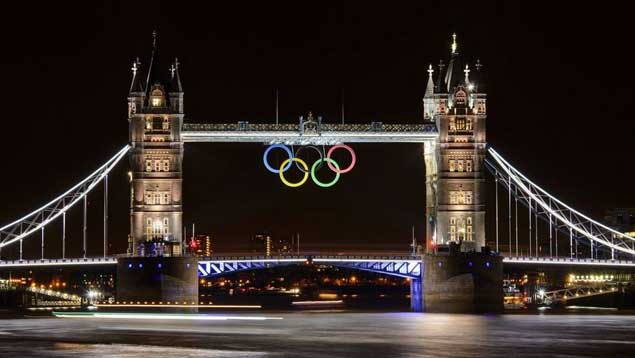
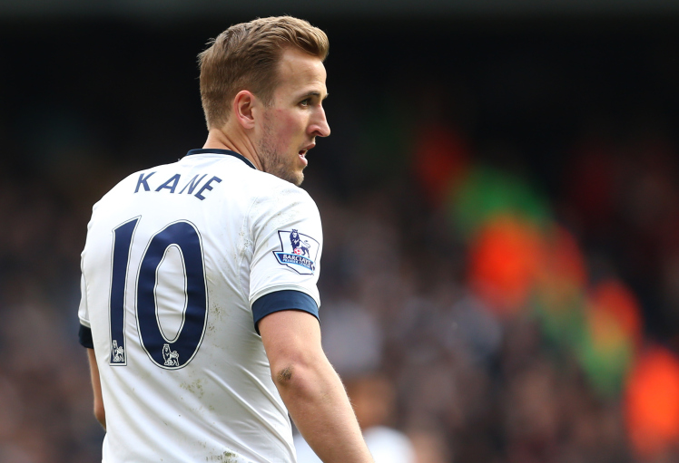
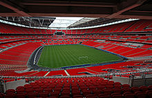
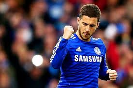

Deportes
Londres ha organizado tres Juegos Olímpicos de Verano, en los años 1908, 1948 y 2012,249 250 y es por ello la ciudad que más ediciones olímpicas ha albergado en la era moderna.20 En el año 1934 la capital organizó los Juegos del Imperio británico251 y albergará el Campeonato Mundial de Atletismo de 2017.

El deporte más popular en Londres es el fútbol y la ciudad cuenta con catorce equipos en la Football League inglesa, siete de ellos en la Premier League: Arsenal, Chelsea, Crystal Palace, Queens Park Rangers, Fulham FC, Tottenham Hotspur y West Ham United.253 En mayo de 2012 el Chelsea se convirtió en el primer club de fútbol londinense en ganar la Liga de Campeones de la UEFA.
En la capital británica existen cinco equipos de rugby union que compiten en la máxima competición de este deporte en Inglaterra, la Aviva Premiership: London Irish, Saracens, London Wasps , London Welsh y Harlequins FC, aunque solo los Harlequins y los Saracens juegan en la ciudad, el resto juegan en la actualidad fuera del Gran Londres.254 El otro equipo de rugby union profesional de la ciudad es el London Scottish F.C., que compite en el RFU Championship y disputa en Londres los partidos que juega en casa. Además la ciudad tiene otros clubes tradicionales de rugby union como Richmond F.C., Rosslyn Park F.C., Westcombe Park R.F.C. y Blackheath F.C.. El rugby league también tiene representación en Londres con tres equipos: London Broncos, London Skolars y el semi profesional Hemel Stags. Desde 1924 el antiguo estadio de Wembley de Londres fue el campo en el que jugaba la Selección de fútbol de Inglaterra. Fue también la sede de las finales de la FA Cup de fútbol y de la Challenge Cup de rugby league.255 El nuevo estadio de Wembley, que tiene capacidad para 90 000 personas, cumple exactamente el mismo propósito que el antiguo.256 El estadio de Twickenham, situado al suroeste de la ciudad y con aforo para 84 000 personas, es el estadio nacional de rugby union.257
El críquet en la capital británica tiene dos campos de test críquet: Lord's, que ha albergado cuatro finales de la Copa Mundial de Críquet y es el campo del equipo Middlesex C.C.C.,258 y The Oval, donde juega el Surrey C.C.C. Una de las competiciones deportivas anuales más famosas que tienen lugar en Londres es el torneo de tenis de Wimbledon, que se celebra en el All England Club, al suroeste de la ciudad en el suburbio de Wimbledon.259 Otros eventos deportivos anuales destacados son la multitudinaria maratón de Londres, en la que suelen correr más de 35 000 personas,260 y la mundialmente famosa regata Oxford-Cambridge en el tramo del río Támesis que discurre entre Putney y Mortlake.261 En el área metropolitana de Londres